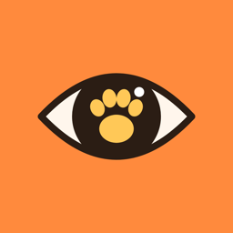

Pets Vision
See the world through your pet's eyes
Need help? 👋
Hi, I'm Alex, the developer of Pets Vision. If something isn't working, or you have an idea for a new animal, write to me. I read every message.
alexandre.bruffa@gmail.comFrequently asked questions
The camera shows nothing
Pets Vision needs camera access. Open your phone's Settings, find Pets Vision, and turn on Camera. Then come back to the app.
My videos have no sound
Sound needs microphone access. In the app, open Settings and turn on "Microphone for videos". If your phone asks, allow the microphone. You can also allow it in your phone's Settings, under Pets Vision.
I bought Pro but video is still locked
In the app, open Settings and tap "Restore purchase". Make sure you are signed in with the same Apple ID or Google account you used to buy Pro.
Do I need to pay again on a new phone?
No. Pro is a one-time purchase. On a new phone with the same Apple ID or Google account, tap "Restore purchase" in Settings.
Is this really what animals see?
Each filter is a simplified model based on research about animal eyes: color, sharpness and shape. It's made for fun and curiosity, not as an exact copy of what animals see.
Where are my photos stored?
Only on your phone. Photos and videos are saved to your gallery when you tap Save. Nothing is uploaded.